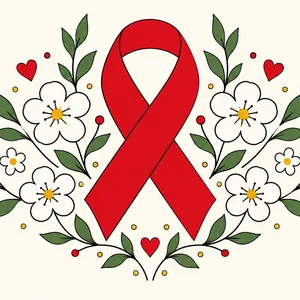

La mayoría de las infecciones de transmisión sexual no dan síntomas. Por eso crecen en silencio. Aquí verás cuánto, a quién, cómo se tratan y cómo la vacuna del VPH ya está cambiando la historia.
En todos los lugares donde he trabajado tomé PAP, exámenes de flujo y test rápido de VIH, y salí a campañas en ferias de salud. Esta historia junta lo que veo en la consulta con los datos.

La cinta roja es el símbolo de la respuesta al VIH: recuerda que hacerse el test es simple, gratis y confidencial, y que con tratamiento el VIH se controla.
Soy Marea. Lo más importante primero: casi todas las ITS se curan o se controlan, y el examen es gratis en tu CESFAM.
En 30 segundos
Los hallazgos que tienes que saber
1 / 11
Ver el resumen completo: todos los hallazgos
Capítulo 1 · Récord
La sífilis nunca había estado tan alta
11.155
casos de sífilis en 2025, la cifra más alta registrada
×2,5
creció la gonorrea desde 2021
4.313
diagnósticos de VIH confirmados en 2025
×5
la sífilis de Chile frente a Europa
Capítulo 2 · ¿A quién le pasa?
Jóvenes primero, pero no solo ellos
Tasa por 100.000 habitantes según edad. Sífilis y gonorrea 2025; VIH 2023.
Hombres vs mujeres, tasa por 100.000.
En mayores de 60 la sífilis en mujeres se duplicó desde 2021. Las ITS no tienen edad: el condón tampoco.
909
casos de sífilis en hombres de 60 años o más en 2025 (419 en 2021)
28,8
tasa de sífilis en mujeres de 60+ por 100.000 (14,4 en 2021)
25
casos de gonorrea en menores de 15 años en 2025 (11 en 2024): siempre se activa el protocolo de protección
4 a 1
VIH en hombres frente a mujeres; pero en mujeres la gonorrea casi se cuadruplicó desde 2021
Capítulo 3 · VIH
Chile diagnostica bien, pero no todos se tratan
21.915
personas saben que tienen VIH y no están en tratamiento. Con tratamiento, el virus se vuelve indetectable, y indetectable = intransmisible.
personas viven con VIH en Chile (49.000 en 2015: +86%). En el mundo, 41 millones
+45%
confirmaciones de VIH desde 2010 en Chile (2.982 → 4.313). Latinoamérica +13%; el mundo bajó 42%
0,41
sífilis congénita por 1.000 nacidos vivos: bajo la meta de eliminación (0,5) gracias al control prenatal
1,5%
transmisión de VIH de madre a bebé (meta: menos de 2%)
Ojo al comparar: Chile notifica casos y Europa los confirma por laboratorio. Una tasa más baja puede significar menos diagnóstico, no menos infecciones. Aun así, la sífilis en Chile es unas 5 veces la de Europa.
Capítulo 5 · Mito o verdad
Pon a prueba lo que sabes
Capítulo 6 · Tratamientos
¿Se cura? Elige una ITS
Dosis para adultos según el Manual de Obstetricia y Ginecología UC 2025, la Norma MINSAL de ITS 2016 y las guías CDC 2021 y OMS. Material educativo para equipos de salud: el tratamiento lo indica y ajusta la matrona o el médico según la norma vigente, el peso, las alergias y los otros remedios. No te automediques.
Capítulo 7 · La vacuna que previene un cáncer
VPH y Gardasil 9
Protege contra 9 tipos de VPH
Alto riesgo de cáncerCausan verrugas genitales
Los tipos 16 y 18 causan cerca del 70% de los cánceres de cuello uterino; con los 9 tipos se cubre alrededor del 90% de esos cánceres y de las verrugas genitales.
−87%
cáncer de cuello uterino en mujeres vacunadas a los 12–13 años (Inglaterra, Lancet 2021)
−57%
menos recaída de lesiones de alto grado si te vacunas cuando te las tratan (BMJ 2022)
86,2%
cobertura de la vacuna en niñas chilenas menores de 15 años
4,6
muertes por cáncer cervicouterino por 100.000 mujeres en 2024 (10,5 en 1990)
En Chile
2014 · Vacuna gratis para niñas de 4.º básico en el colegio.
2019 · Se suman los niños.
2024 · Cambia a Gardasil 9 (nonavalente) y una sola dosis en 4.º básico.
Hoy · Gratis en 4.º y 5.º básico. Mayores: en vacunatorios privados con indicación médica (aprobada desde los 9 años).
¿Y si ya tuve verrugas o un PAP alterado? Igual conviene vacunarse. La vacuna no cura la infección que ya tienes, pero te protege de los otros tipos de VPH que todavía no has tenido, incluidos los que causan cáncer. Si te trataron una lesión del cuello uterino, vacunarte baja la probabilidad de que vuelva. Y sigue con tu PAP o test VPH: la vacuna no lo reemplaza.
Capítulo 8 · Dónde atenderte
Tu matrona está en la primera línea
Historia de datos de María Cisterna Escobar, matrona · Registro Superintendencia de Salud N° 561993. Las cifras de 2025 provienen de prensa que cita los informes MINSAL e ISP; contrástalas con los documentos oficiales. Material educativo: no reemplaza la consulta.